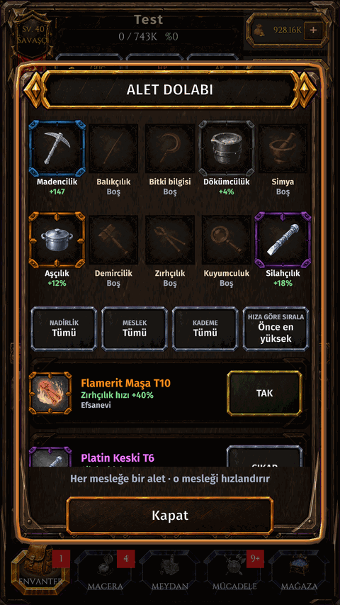
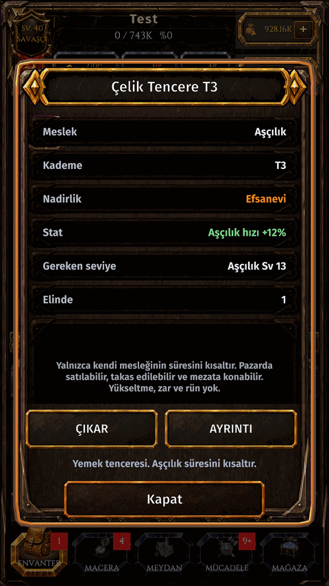

Aletler
Nedir
Toplama aletleri (kazma, olta, orak) ve atölye aletleri kendi mesleklerini hızlandırır. Alet yuvasına tak.
Nasıl gidilir
- ENVANTER.
- ALET yuvasına dokun.


Toplama aletleri (kazma, olta, orak) ve atölye aletleri kendi mesleklerini hızlandırır. Alet yuvasına tak.

